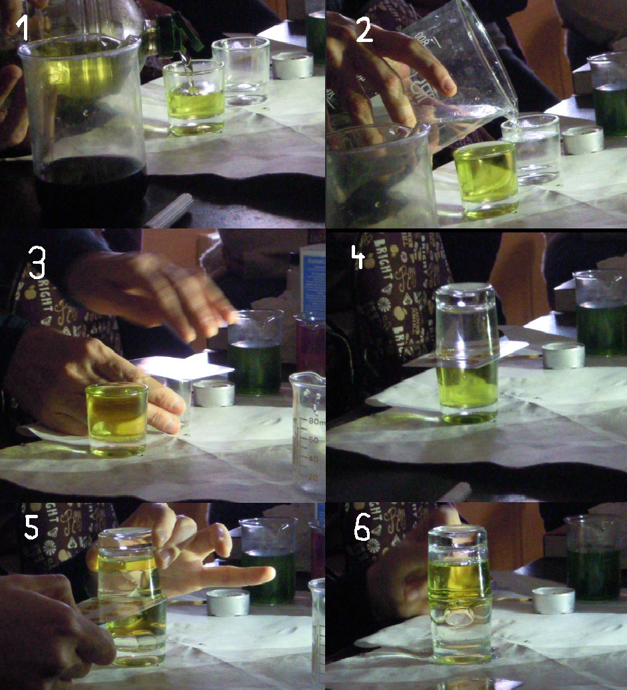
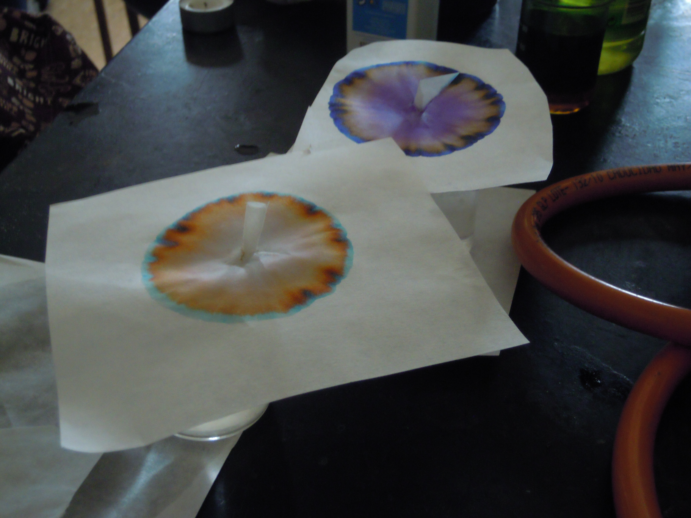
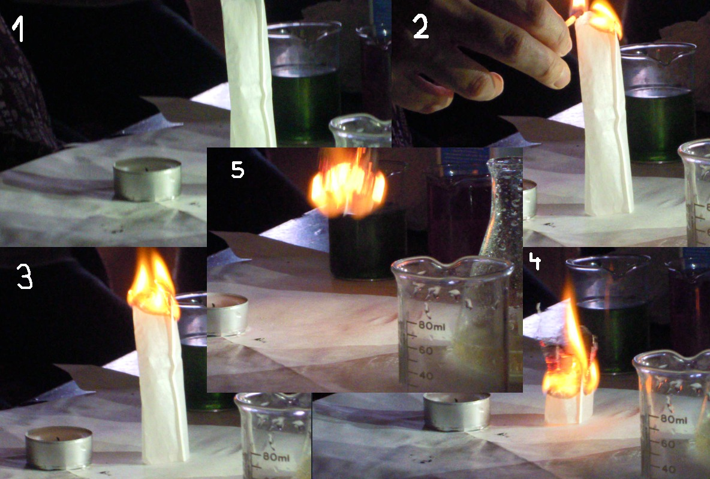
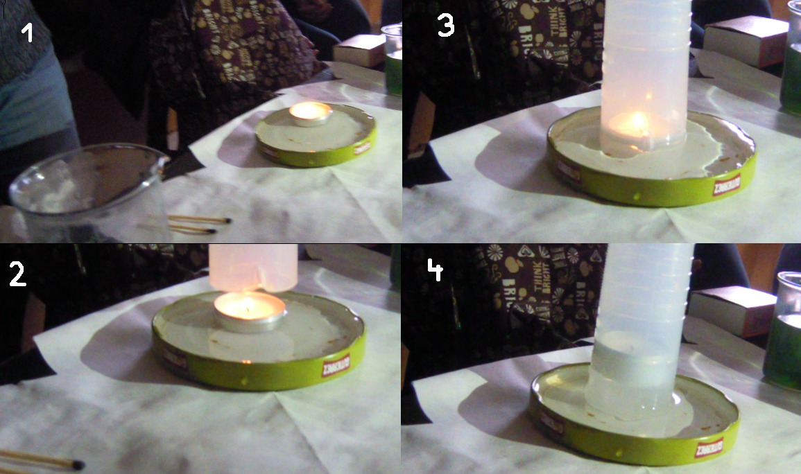
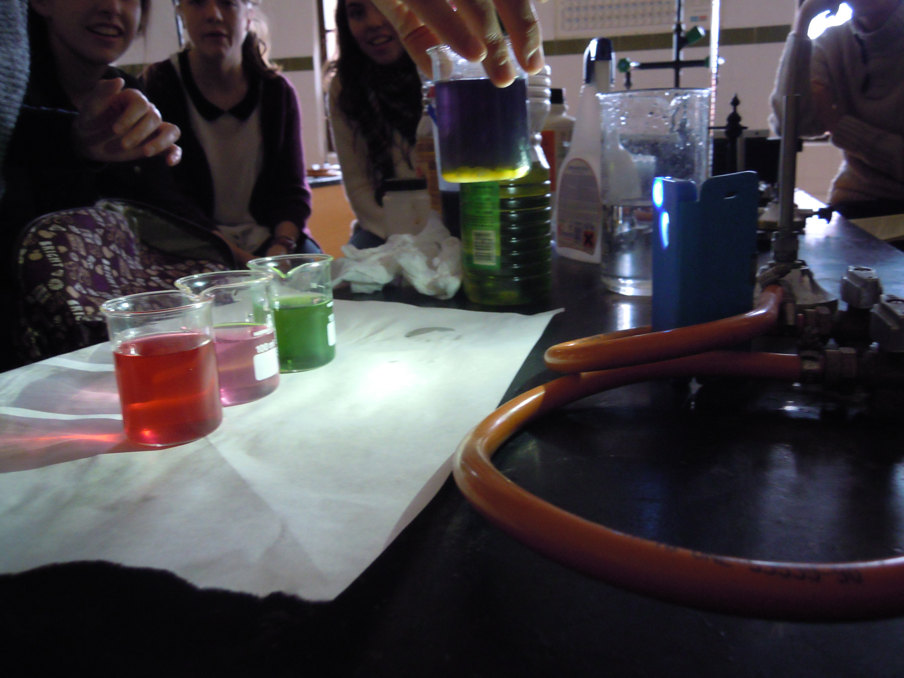

Connecta és una associació de promoció científica que centra el seu interès en la didàctica, divulgació i desenvolupament de l'aprenentatge de les ciències, sobretot a nivell de l'educació secundària. Des d'ací vos convide a què pegueu un passeig per la seua web. També té activitat tipus blog a la seua pàgina de Facebook i micro-blogging al seu Twitter: @connectacpc.
Per a professors:
¿Cómo promover el interés por la cultura científica? de la Década de la Educación para el Desarrollo Sostenible.
Mind over Math de Stanley Kogelman i Joseph Warren.
Per a tothom:
Una breu història de gairebé tot de Bill Bryson.
Por amor a la física, de Walter Lewin.

Intercambio agua y aceite

Cromatografía con papel de filtro, rotuladores y agua

¿Subirá el cohete?

Cómo llenar un vaso de agua al revés

pH con col lombarda como indicador
Fotos por cortesía de Henar (1º B).